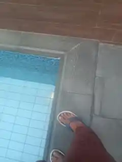

خدماتنا المتخصصة في جدة
اختر الخدمة التي تحتاجها
خصصنا صفحة مستقلة لكل خدمة حتى تجد التفاصيل والصور ومعلومات التواصل بسهولة.

تركيب بلاط الأرضيات والجدران
Floor & Wall Tiles
عرض الصفحة ←
تركيب الإنترلوك والبلدورات
Interlock & Kerbstones
عرض الصفحة ←
تركيب البلدورات والحواف الخرسانية
Kerbstones & Curbs
عرض الصفحة ←
تركيب الأرضيات الخارجية والأحواش
Outdoor Flooring & Courtyards
عرض الصفحة ←
تركيب الرخام والحجر والسلالم
Marble, Stone & Stairs
عرض الصفحة ←
تبليط الحمامات
Bathroom Tiling
عرض الصفحة ←
تبليط المسابح
Swimming Pool Tiling
عرض الصفحة ←أعمال البلاط والرخام فقط
تركيب نظيف ودقيق
بلاط الأرضيات والجدران، الرخام والسلالم، الإنترلوك، الحمامات والمسابح. نركز على جودة التركيب واستقامة الخطوط ونظافة التشطيب.
أرسل تفاصيل مشروعكمعرض أعمال البلاط والحجر
صور تركيب البلاط والرخام والمسابح والإنترلوك
صور من الأعمال الفعلية المرسلة، مع توضيح الصور النموذجية بشكل مستقل.


نجهز معرض صور الأعمال الفعلية للبلاط والجدران والمسابح والإنترلوك. للاستفسار وإرسال موقع العمل داخل جدة، تواصل معنا مباشرة عبر واتساب.